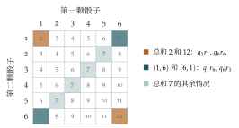

STEP I 1999，第 12 题
继续之前，请先阅读题目（原题为英文）。题目载于 STEP Support Programme 的题目资料库： step.maths.org/questions/99-s1-q12
引子
掷两颗公平骰子时，点数总和为 \(7\) 的可能性是总和为 \(2\) 的六倍。桌上游戏的设计者有时会希望情况并非如此：能否在骰子上做手脚（加上配重，使某些面较常出现），令 \(2\) 至 \(12\) 的每个总和都有相同的机会，即 \(\frac{1}{11}\)？那十二个概率（probability）可以任你选择，看来回旋的余地相当充裕。
答案是不能，而证明堪称一绝：它只用到十一个总和中的三个，以及不等式（inequality）\(x + \frac1x \geq 2\)。这是证明某件事不可能的典范；与证明某件事办得到相比，这往往更难，也更有趣。
动笔之前
对于 \(x > 0\)，你会怎样证明 \(x + \frac1x \geq 2\)？等号何时成立？
两边同乘 \(x > 0\)：不等式变成 \(x^2 + 1 \geq 2x\)，即 \((x - 1)^2 \geq 0\)，这显然成立。等号只在 \(x = 1\) 时成立。（另一做法是 \(x + \frac1x - 2 = \bigl(\sqrt x - \frac{1}{\sqrt x}\bigr)^2\)。）这是算术平均—几何平均不等式（AM–GM inequality）最简单的形式：\(x\) 与 \(\frac1x\) 的平均值不小于它们的几何平均（geometric mean）\(1\)。
逐步解题
阶段 1 两端的总和
掷出总和 \(2\) 有多少种方法？总和 \(12\) 呢？试以 \(q_i\) 和 \(r_j\) 表示它们的概率。
总和为 \(2\) 需要两颗骰子都掷出 \(1\)，总和为 \(12\) 则需要两颗都掷出 \(6\)，所以 \(\mathrm{P}(2) = q_1r_1\) 及 \(\mathrm{P}(12) = q_6r_6\)。
为了引出矛盾，假设全部十一个总和的可能性相等，每个的概率都是 \(\frac{1}{11}\)。那么 \[q_1r_1 = \frac{1}{11}, \qquad q_6r_6 = \frac{1}{11}.\] 特别地，\(q_1\)、\(r_1\)、\(q_6\)、\(r_6\) 四者全为正数。
阶段 2 中间的总和
总和 \(7\) 可以由六种方法得出。其中哪两种只涉及 \(1\) 和 \(6\) 这两个面？试利用上面的等式写出它们的概率。
总和 \(7\) 包括结果（\(1\), \(6\)）和（\(6\), \(1\)），所以 \[\mathrm{P}(7) \geq q_1r_6 + q_6r_1.\] 现在利用第 1 步的等式引入一个比。由于 \(q_1 = \frac{1}{11r_1}\) 及 \(q_6 = \frac{1}{11r_6}\)， \[q_1r_6 + q_6r_1 = \frac{1}{11}\Bigl(\frac{r_6}{r_1} + \frac{r_1}{r_6}\Bigr) \geq \frac{1}{11} \times 2 = \frac{2}{11},\] 这里用了 \(x + \frac1x \geq 2\)，其中 \(x = r_6/r_1 > 0\)。因此 \(\mathrm{P}(7) \geq \frac{2}{11}\)，与 \(\mathrm{P}(7) = \frac{1}{11}\) 矛盾。各个总和不可能全部等可能。■
看看这个证明为何行得通。要令 \(2\) 和 \(12\) 与 \(7\) 同样可能出现，\(1\) 和 \(6\) 就必须有相当高的概率，于是单凭（\(1\), \(6\)）和（\(6\), \(1\)）这两个“混合”结果，已足以令 \(7\) 的概率过高。图 9.13.1 显示了所涉及的方格。

阶段 3 同一颗骰子掷两次
如果把一颗骰子掷两次，两次点数相同的概率是多少？试以 \(q_j\) 表示。对公平骰子而言，这个概率是多少？
两次掷出相同点数的概率是 \(q_1^2 + q_2^2 + \cdots + q_6^2\)。对公平骰子而言，这是 \(6 \times \frac{1}{36} = \frac16\)，已经远大于 \(\frac{1}{36}\)。
在骰子上做手脚，能否令 \(\sum q_j^2\) 小于 \(\frac16\)？你知道 \(\sum q_j = 1\)。
写成 \(q_j = \frac16 + e_j\)，其中各偏差 \(e_j\) 之和为零。那么 \[\sum q_j^2 = \sum\Bigl(\frac{1}{36} + \frac{e_j}{3} + e_j^2\Bigr) = \frac16 + \frac13\sum e_j + \sum e_j^2 = \frac16 + \sum e_j^2 \geq \frac16.\] 所以掷出重复点数的概率必定不小于 \(\frac16\)，而且只有公平骰子才令等号成立。它当然不可能小于 \(\frac{1}{36}\)。■
回顾
反证法（proof by contradiction）。我们假设所有总和等可能，然后推出不可能成立的结论。
只用所需的条件。十一条等式之中，三条已经足够。选对等式正是关键的一步。
以不等式证明不可能。第 (i) 部分的算术平均—几何平均不等式，以及第 (ii) 部分的“平方和非负”，都一举排除了一整类的可能性。
背后的数学
用多项式来证明
以下是一个完全不同的证明，用的是 第 9.6 节 的生成函数（generating function）。设 \(Q(x) = q_1x + \cdots + q_6x^6\) 及 \(R(x) = r_1x + \cdots + r_6x^6\)。假如所有总和的概率都是 \(\frac{1}{11}\)，则 \[Q(x)R(x) = \frac{x^2 + x^3 + \cdots + x^{12}}{11} = \frac{x^2}{11}\bigl(1 + x + \cdots + x^{10}\bigr).\] 现在 \(Q(x)/x\) 是一个 \(5\) 次实系数多项式（polynomial），而每个奇数次的实多项式都有一个实根（它的图像由 \(-\infty\) 走到 \(+\infty\)，或者反过来）。所以左边有一个非零的实根。但 \(1 + x + \cdots + x^{10} = \frac{x^{11} - 1}{x - 1}\)，它的根是 \(1\) 以外的 \(11\) 次单位根（roots of unity），当中没有一个是实数。矛盾。同样的论证表明，只要 \(n - 1\) 是奇数，即 \(n\) 是偶数，无论怎样在两颗 \(n\) 面骰子上做手脚，都不能令各个总和等可能。（当 \(n\) 是奇数时，多项式的论证需要多花些工夫，但上面的算术平均—几何平均证明对每个 \(n \geq 2\) 都适用。）
碰撞概率
第 (ii) 部分中的量 \(\sum q_j^2\)，即两次独立抽取结果相同的机会，称为一个分布的碰撞概率（collision probability）。第 (ii) 部分表明，均匀分布（uniform distribution）的碰撞概率最小。它量度一个分布有多集中：在生态学中，\(\sum q_j^2\) 是辛普森多样性指数（Simpson’s index of diversity），其中 \(q_j\) 是物种 \(j\) 在某个生境中所占的比例；在经济学中，它是量度市场集中度的赫芬达尔指数（Herfindahl index）；在密码学中，它量度一个密码分布有多容易被猜中。它也解释了 第 9.9 节 结尾的那句话：各个生日的概率不相等，只会令生日相同的情况更有可能出现。
数学中一些最著名的结果，说的正是某件事办不到：没有分数的平方等于 \(2\)；没有尺规作图法能三等分任意角；没有根式公式能解所有五次方程；没有算法能判定每一个数学命题。每一个这样的结果都改变了所属的学科，因为要证明没有任何方法行得通，就必须了解所有方法构成的整个空间。灌铅骰子问题是一个缩影：要排除每一种做手脚的方式，我们需要一个每种方式都必须遵守的不变性质（算术平均—几何平均不等式）。
思维技巧
要证明没有任何参数的选取行得通，先假设有一组行得通，找出互相抵触的那几个条件，再用不等式证明它们不可能同时成立。
在大学里，反证法配合不等式是证明某些对象不存在的标准方法，见于分析、组合数学和最优化；在这些领域中，算术平均—几何平均不等式和柯西—施瓦兹不等式（Cauchy–Schwarz inequality）这类不等式为可达到的结果设下了界限。
延伸练习
柯西—施瓦兹不等式。利用柯西—施瓦兹不等式 \(\bigl(\sum a_jb_j\bigr)^2 \leq \sum a_j^2\sum b_j^2\)，取 \(a_j = q_j\) 及 \(b_j = 1\)，为第 (ii) 部分给出一行的证明。
两颗不同的骰子。如果把两颗不同的灌铅骰子各掷一次，它们点数相同的概率能否小于 \(\frac16\)？能否等于 \(0\)？
面上数字不同时的均匀总和。证明如果两颗骰子各面的数字另作安排，它们可以给出等可能的总和：试取一颗骰子的数字为 \(0, 1, 2, 3, 4, 5\)，另一颗为 \(0, 6, 12, 18, 24, 30\)。会出现哪些总和？为甚么这与题目并不矛盾？
三颗骰子。三颗各面为 \(1\) 至 \(6\) 的六面灌铅骰子，能否令 \(3\) 至 \(18\) 的所有总和等可能？（提示：利用总和 \(3\)、\(8\)、\(13\) 和 \(18\)，以及六个数的算术平均—几何平均不等式。为甚么多项式证明这次行不通？）
延伸阅读
J. Michael Steele, The Cauchy–Schwarz Master Class（Cambridge University Press）。一本出色的不等式入门书，由算术平均—几何平均不等式讲起。
Geoffrey Grimmett & Dominic Welsh, Probability: An Introduction（Oxford University Press）。讲述生成函数，以及它们在上述这类证明中的应用。
Ian Stewart, Galois Theory（CRC Press），开首数章。最著名的不可能性证明：五次方程。